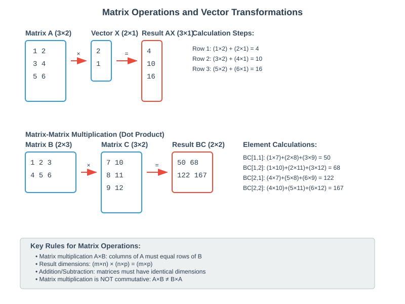
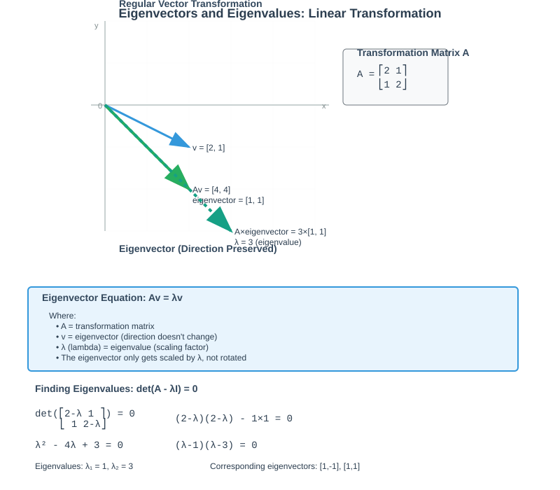
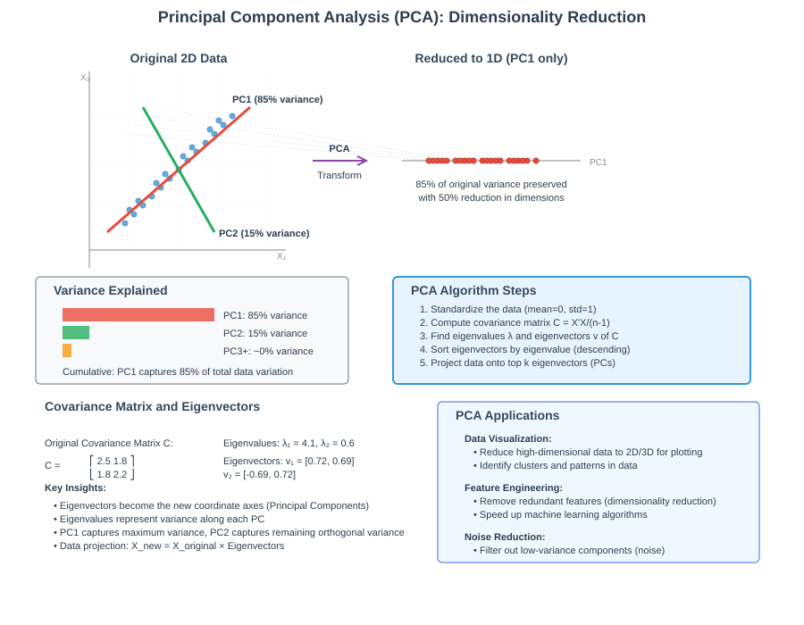
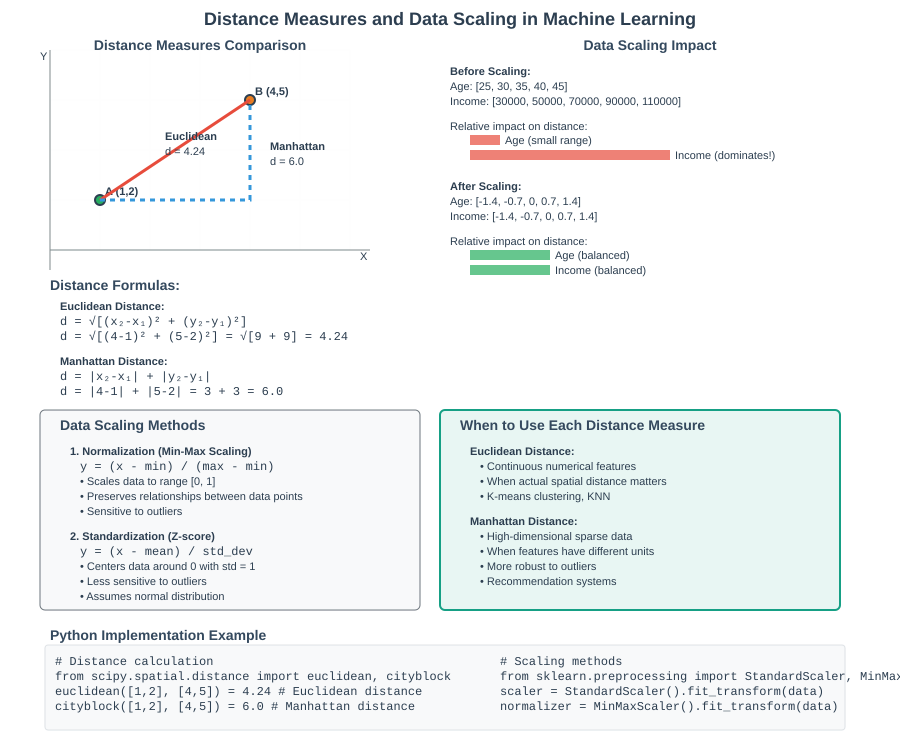
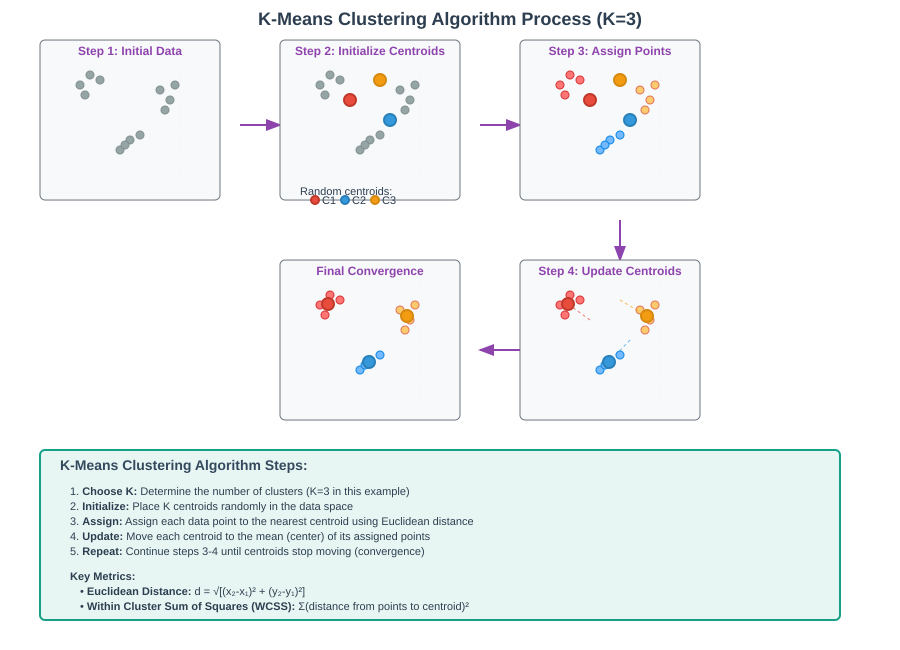

Clustering Fundamentals: Linear Algebra to Unsupervised Learning


📋 Quick Navigation
- 🔢 Linear Algebra Fundamentals
- 🎯 Eigenvectors and Eigenvalues
- 📊 Covariance and KL Divergence
- 🤖 Unsupervised Learning
- 📉 Dimensionality Reduction
- 📏 Distance Measures and Scaling
- 🎪 K-Means Clustering
- 🌐 Graph Theory
- 📚 References & Further Reading
🔢 Linear Algebra Fundamentals
Understanding clustering algorithms requires a solid foundation in linear algebra. This section covers the essential concepts of matrices and vectors that form the backbone of machine learning algorithms.
Matrix and Vector Operations
Matrix: A two-dimensional array with m rows and n columns, denoted as m×n. Matrices are fundamental for representing input variables in machine learning.
Vector: A one-dimensional array that can be either a row vector (1×n) or column vector (n×1).

Key Operations
Addition and Subtraction: Both matrices must have identical dimensions. Operations are performed element-wise:
A + B = [a₁₁ + b₁₁ a₁₂ + b₁₂]
[a₂₁ + b₂₁ a₂₂ + b₂₂]
Matrix-Vector Multiplication: The number of columns in the matrix must equal the number of elements in the vector:
AX = [a₁₁x₁ + a₁₂x₂]
[a₂₁x₁ + a₂₂x₂]
[a₃₁x₁ + a₃₂x₂]
Matrix-Matrix Multiplication (Dot Product): For matrices A(m×n) and B(n×p), the result is C(m×p):
C[i,j] = Σ(k=1 to n) A[i,k] × B[k,j]
Determinant of a Matrix
For a 2×2 matrix:
det(A) = ad - bc
where A = [a b] [c d]
The determinant is crucial for understanding matrix invertibility and eigenvalue calculations.
🎯 Eigenvectors and Eigenvalues
Eigenvectors and eigenvalues are fundamental concepts in linear algebra that play a crucial role in dimensionality reduction techniques like PCA.

Mathematical Definition
An eigenvector v of a matrix A is a non-zero vector that, when A is applied to it, results in a scaled version of itself:
Av = λv
where: - A = transformation matrix - v = eigenvector (direction preserved) - λ (lambda) = eigenvalue (scaling factor)
Finding Eigenvalues
To find eigenvalues, we solve the characteristic equation:
det(A - λI) = 0
For a 2×2 matrix A = [a b], this becomes: [c d]
det([a-λ b ]) = (a-λ)(d-λ) - bc = 0
([c d-λ])
Applications in Machine Learning
Principal Component Analysis (PCA): Eigenvectors of the covariance matrix become the principal components, with eigenvalues indicating the variance explained by each component.
Spectral Clustering: Uses eigenvectors of similarity matrices to identify clusters in non-linearly separable data.
PageRank Algorithm: The dominant eigenvector of the web link matrix determines page importance.
📊 Covariance and KL Divergence
Covariance
Variance measures how far a random variable spreads from its mean:
σ²ₓ = Σ(xᵢ - x̄)² / (n-1)
Covariance measures how two random variables vary together:
Cov(X,Y) = Σ(xᵢ - x̄)(yᵢ - ȳ) / (n-1)
Covariance Matrix for multiple dimensions:
C = [σ²ₓ Cov(X,Y)]
[Cov(Y,X) σ²ᵧ ]
Kullback-Leibler (KL) Divergence
KL divergence quantifies how one probability distribution differs from another:
D_KL(P||Q) = Σ P(x) log(P(x)/Q(x))
Key Properties: - Non-symmetric: D_KL(P||Q) ≠ D_KL(Q||P) - Non-negative: D_KL(P||Q) ≥ 0 - Zero when distributions are identical
Applications: - Variational Autoencoders: Regularization term in loss function - t-SNE: Optimizes KL divergence between high and low-dimensional distributions - Information Theory: Measures information gain
🤖 Unsupervised Learning
Unsupervised learning algorithms discover hidden patterns in data without labeled examples. The main categories include:
Types of Unsupervised Learning
| Type | Purpose | Examples |
|---|---|---|
| Clustering | Group similar data points | K-means, Hierarchical, DBSCAN |
| Association | Find relationships between variables | Market basket analysis, Apriori |
| Dimensionality Reduction | Reduce feature space | PCA, t-SNE, UMAP |
Clustering Applications
Customer Segmentation: Group customers by purchasing behavior, demographics, or preferences for targeted marketing campaigns.
Image Segmentation: Partition images into meaningful regions for computer vision tasks.
Gene Expression Analysis: Identify groups of genes with similar expression patterns across different conditions.
Document Classification: Cluster documents by topic without predefined categories.
Key Characteristics
- No labeled data required for training
- Pattern discovery through statistical relationships
- Exploratory analysis to understand data structure
- Preprocessing step for supervised learning
📉 Dimensionality Reduction
High-dimensional data presents challenges for analysis, visualization, and algorithm performance. Dimensionality reduction techniques address these issues while preserving essential information.

Principal Component Analysis (PCA)
PCA transforms correlated variables into a smaller set of uncorrelated principal components:
Algorithm Steps: 1. Standardize the data (μ=0, σ=1) 2. Compute covariance matrix C 3. Calculate eigenvalues and eigenvectors of C 4. Sort eigenvectors by eigenvalue magnitude 5. Project data onto top-k eigenvectors
Mathematical Foundation:
C = X'X / (n-1) # Covariance matrix
Cv = λv # Eigenvalue equation
Y = XW # Projection (W = eigenvector matrix)
t-SNE (t-Distributed Stochastic Neighbor Embedding)
t-SNE preserves local neighborhood structure when mapping to lower dimensions:
Key Features: - Non-linear dimensionality reduction - Preserves local similarities - Optimizes KL divergence between probability distributions - Excellent for visualization (2D/3D)
Comparison: PCA vs t-SNE
| Aspect | PCA | t-SNE |
|---|---|---|
| Type | Linear | Non-linear |
| Speed | Fast | Slow |
| Interpretability | High | Low |
| Global Structure | Preserved | Not preserved |
| Local Structure | Moderate | Excellent |
| Use Case | Feature reduction | Visualization |
📏 Distance Measures and Scaling
Distance metrics are fundamental to clustering algorithms, determining how similarity between data points is calculated.

Common Distance Metrics
Euclidean Distance: Straight-line distance in n-dimensional space
d = √[(x₂-x₁)² + (y₂-y₁)² + ... + (zₙ-z₁)²]
Manhattan Distance: Sum of absolute differences (L1 norm)
d = |x₂-x₁| + |y₂-y₁| + ... + |zₙ-z₁|
Cosine Distance: Measures angle between vectors
d = 1 - (A·B)/(||A|| ||B||)
Data Scaling Methods
Normalization (Min-Max Scaling):
y = (x - min) / (max - min)
- Range: [0, 1]
- Preserves relationships
- Sensitive to outliers
Standardization (Z-score):
y = (x - μ) / σ
- Mean: 0, Standard deviation: 1
- Less sensitive to outliers
- Assumes normal distribution
Scaling Impact on Clustering
Without scaling, features with larger numerical ranges dominate distance calculations:
# Before scaling
Age: [25, 30, 35] # Range: 10
Income: [30000, 50000, 70000] # Range: 40000 (dominates!)
# After standardization
Age: [-1, 0, 1] # Balanced contribution
Income: [-1, 0, 1] # Balanced contribution
🎪 K-Means Clustering
K-means is one of the most popular clustering algorithms, partitioning data into k clusters based on feature similarity.

Algorithm Steps
- Choose K: Determine the number of clusters
- Initialize: Place k centroids randomly in data space
- Assign: Assign each point to the nearest centroid
- Update: Move centroids to the mean of assigned points
- Repeat: Continue until convergence (centroids stop moving)
Mathematical Foundation
Distance Calculation (Euclidean):
d(p,c) = √Σᵢ(pᵢ - cᵢ)²
Centroid Update:
cⱼ = (1/|Sⱼ|) Σ_{x∈Sⱼ} x
Objective Function (minimize Within-Cluster Sum of Squares):
WCSS = ΣΣ ||x - μⱼ||²
Evaluation Methods
Elbow Method: Plot WCSS vs K and find the "elbow" point where improvement diminishes.
Silhouette Score: Measures cluster cohesion and separation:
s(i) = (b(i) - a(i)) / max{a(i), b(i)}
where: - a(i) = average distance to points in same cluster - b(i) = average distance to points in nearest cluster
Silhouette Score Interpretation:
- +1: Perfect clustering
- 0: Overlapping clusters
- -1: Incorrect clustering
Assumptions and Limitations
| Assumption | Limitation |
|---|---|
| Spherical clusters | Fails with elongated or irregular shapes |
| Similar cluster sizes | Unbalanced clusters cause poor performance |
| Similar densities | Dense and sparse clusters mixed poorly |
| Linear boundaries | Cannot handle non-linear cluster boundaries |
Applications
- Customer Segmentation: Group customers by purchasing behavior
- Image Segmentation: Partition images into regions
- Market Research: Identify consumer groups
- Data Compression: Reduce color palettes in images
🌐 Graph Theory
Graph theory provides the mathematical foundation for understanding relationships and structures in data, essential for advanced clustering techniques.
Graph Fundamentals
Mathematical Representation: G = (V, E) - V: Set of vertices (nodes) - E: Set of edges (connections)
Types of Graphs: - Directed: Edges have direction (A → B) - Undirected: Edges are bidirectional (A ↔ B) - Weighted: Edges have associated weights/costs - Unweighted: All edges are equivalent
Graph-Based Clustering
Spectral Clustering: Uses eigenvalues and eigenvectors of graph Laplacian matrices to identify clusters in non-convex shapes.
Community Detection: Identifies groups of densely connected nodes in networks.
Minimum Spanning Tree: Creates hierarchical clustering by removing edges in order of weight.
Applications in Machine Learning
- Social Network Analysis: Identify communities and influencers
- Recommendation Systems: Model user-item relationships
- Knowledge Graphs: Represent entities and relationships
- Molecular Biology: Analyze protein interaction networks
📚 References & Further Reading
📖 Essential Papers
- MacQueen, J. (1967). "Some methods for classification and analysis of multivariate observations." Proceedings of the Fifth Berkeley Symposium on Mathematical Statistics and Probability
- Pearson, K. (1901). "On lines and planes of closest fit to systems of points in space." The London, Edinburgh, and Dublin Philosophical Magazine and Journal of Science
- Van der Maaten, L., & Hinton, G. (2008). "Visualizing data using t-SNE." Journal of Machine Learning Research, 9, 2579-2605
- Arthur, D., & Vassilvitskii, S. (2007). "k-means++: The advantages of careful seeding." Proceedings of the Eighteenth Annual ACM-SIAM Symposium on Discrete Algorithms
🎥 Video Resources
- 3Blue1Brown: Eigenvectors and Eigenvalues
- StatQuest: K-means Clustering
- Andrew Ng: Unsupervised Learning
🛠️ Practical Implementation
📊 Datasets for Practice
- UCI Machine Learning Repository
- Kaggle Clustering Competitions
- Iris Dataset - Classic clustering benchmark
This documentation provides a comprehensive foundation for understanding clustering fundamentals, from mathematical principles to practical applications. The combination of theoretical knowledge and visual representations ensures both conceptual clarity and implementation readiness.